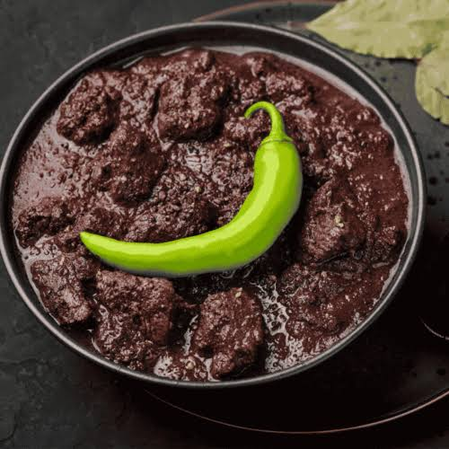
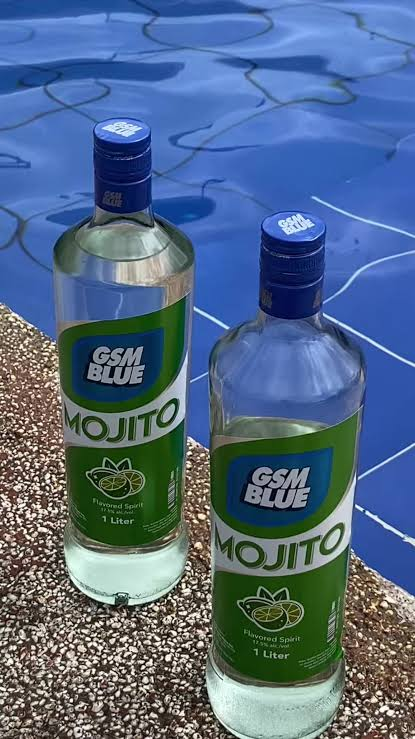
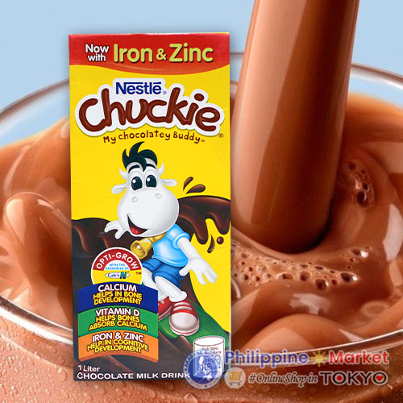

01 / 04
Pork Steak
Pork steak is my top 1 overall favorite food. My grandmother's and mother's way of cooking porksteak is my standard. I like it cooked a bit salty and the pork is not too thin.
01 At home
These are my top 4 favorite foods that is usually cooked at home, or just a general cuisine.
Pork steak is my top 1 overall favorite food. My grandmother's and mother's way of cooking porksteak is my standard. I like it cooked a bit salty and the pork is not too thin.
I consider sisig to be one of my top two favorite foods overall. What I particularly love about sisig is how versatile it is, I can enjoy it almost anywhere and in many different forms. Whether it’s the canned version, something served at a restaurant, or a homemade dish prepared at home, sisig always manages to be a satisfying choice.
Adobo is a versatile dish that can be cooked in many different ways. It can be cooked as a chicken adobo,pork adobo or even combines. It can also be cooked as as salty and sweet and salty

Dinuguan is not usually cooked at home frequently but more found on special days such as birthdays, fiesta and more. Whenever there is an event and there are dinuguan, I always pick that as my first main dish
02 Going out
These are my favorite go-to restaurants if I'm outside and an alternative when there's no food at home
KFC is a top 1 choice for alternative food whether Im going out or when there's no food at home. My usual at kfc is the spicy fried chicken and the ala king zinger steak.
Jollibee is a good 2nd alternative when KFC is not available. My go-to food in Jollibee is a double pc. burger steak w/ fries and spaghetti
Mang Inasal is always there for me to go for. The unli rice and the chicken oil combo is on top but I dont always go for it since it can be unhealthy when your always eating salty and oily foods

Botejyu is last on my favorites for it's not always accessible and not practical to go for frequently for it's price. Though we always go for it when family bonding. My favorite dish is the tonkatsu curry
03 Small cravings
Quick favorites for quiet afternoons, late nights, and everything in between
04 Something refreshing
These are the drinks I usually go for when I have extra money or just wants a refresh for the day

My top, go-to, favorite drink. It is my top option whenever I'm buying in a cafe or any drinks store like starbucks and such

Included an alcohol here since why not. One of my favorite alcohol to drink whenever there's a special event like birthdays, christmas and more
Royal is my pick whenever i want a refresh for the day usually after basketball, just got home after a hot summer day. Also a usual go for drink whenever there's an event

My favorite cheap chocolate drink. Always buying a 6pcs or 1 gallon and its gone after 3 days.
A closer look at the games I enjoy, the worlds I explore, and what I usually play in my free time.
Discover moreDiscover the artists, songs, and sounds that stay in my rotation and shape my everyday mood.
Discover more